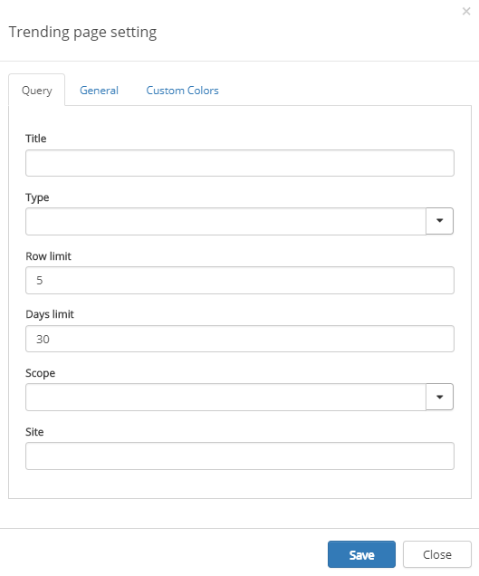
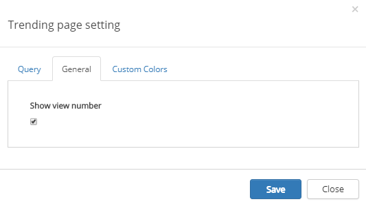
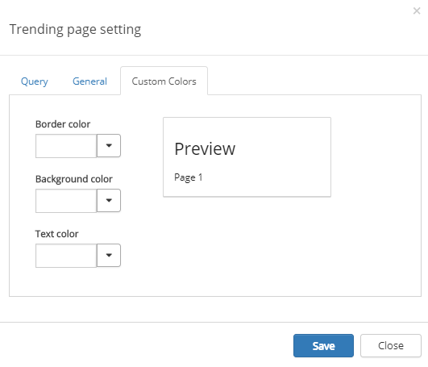

You can use the Trending pages control to display Most liked pages, Most viewed pages or Most commented pages.
The control can be used on any publishing page and is available as a block for Quick Pages or as a web part, and you can of course use several instances of this control on a page.
Setting up the control is a two step process, first placing the web part/block on the publishing page, and then setting the various settings, to decide what to display in the control.
To access the settings for the control click the settings gear for the control. This will open the settings dialog.
The settings consists of two tabs:

On this tab the following settings are available:
On this tab you can select to show number of views or not.

You should primarily set colors through Theme colors in Omnia Admin (System/Settings/Default colors). If you still would like custom colors for the control, you can set them using this tab.
